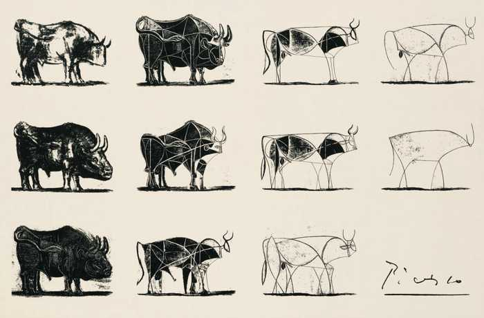

North South
Artistic Reflection and Design Rationale

from ArtFactory
By Khutso Nkadimeng, 09 Oct 2021
Introduction
NNorth South is an abstract representation of the economic and internet access disparities of the Global North and South. South Africa provides a good sample as both worlds exist as neighbours in many cities across the country. I have previously provided a prototype of how I intend to model this unfortunate reality of the world's most unequal country, which you can view under the Internet Art page. The next step of the project was aimed at implementing the prototyped idea for the whole site. To achieve my artistic goals, I followed the following success criteria.
Success Criteria
To consider my project an artistic success, it must:
Interactive Experience
RationaleInteractivity is what differentiates internet artwork from traditional art. Making the art interactive is a guaranteed way to avoid confusing art on the internet with internet art. Interactivity also enables a more faithful abstraction of real-life because life is interactive. I do not believe that I would be able to say what I am saying through this art if it was not interactive.
There is also user experience to keep in mind. I want the user to feel the differences of being in the North and South. The differences are minor but also frustrating enough for the user to get the message. That, however hard things may be in the North, life in the South is much worse.
ReflectionFrom a creative perspective, the interactive experience is hitting all the right targets. Reading each of the blogs takes work, just like anything in life. Life is frustrating for everyone in South Africa. Load shedding is a serious problem right now in the country; it affects everyone, but not equally. I was recently in Tembisa township, and in that area, when the power goes out, so does the internet. But in Braamfontein, I am still able to work for an hour before my battery dies. Both are undesirable experiences but not equal in effects. An hour could be the difference between making an important deadline and completely failing. My art shows this type of occurrence well. The reader faces a fading article in the North and South, but the fading is slower in the North, allowing the Northerners slightly more room to breathe.
Minimalism
RationaleBetween 1945 and 1946, Pablo Picasso drew a series of eighteen bulls and removed details with each one. In the final drawing, as seen in the photo, all that is left are a few lines and shapes. The final illustration, the essence of the bull, is what Picasso entitled The Bull (Burger and Starbird 2012).
Capturing the South African experience in detail is worth as many PhDs as the population of this country. I only want to capture The Bull, the essence of the unequal nature of our country. In line with my commitment to consistency, the entire website is minimal, I only want the essentials.
ReflectionMy styling is minimal; it is as detailed as The Bull. But it delivers the message I want. I want the visual aspect of the website to simply be functional. The art comes from the experience, how the users feel when interacting with the North and South sides. I have managed to enhance that experience without tempering how things look. The site looks old now, but it feels completely different.
Colours
RationaleI use black, white, whitesmoke and grey throughout the site. Grey and whitesmoke are basically shades of black and white; that is where my emphasis lies. Inequality in South Africa is separated along racial lines. Although things are slowly changing, white people in affluent neighbourhoods still live next to black people in slums, which is the inequality my project seeks to express.
The colours are not just about race, the idea is to show opposite sites of the world, give different experiences. You can tell by the name, North South. In the colour spectrum, the contrast of black and white is unparalleled.
ReflectionFor colours, nothing has changed, and it will remain that way even in future applications. The colours simply work for my idea, and I saw no reason to tamper with that.
Homogeneity
RationaleI mention in multiple articles that I do not want my project to be a host of artwork. I want the site to be the artwork. For that, seamlessness is required throughout the site.
ReflectionI did not perform particularly well in the area from the technical and even artistic viewpoints. The website jumps between the React and JavaScript sites too frequently, making everything feel broken, maybe because it is. However, the feel I wanted for the project was achieved in the JavaScript site.
References
Burger, E & Starbird, M. 2012. The 5 Elements of Effective Thinking. United Kingdom: Princeton University Press